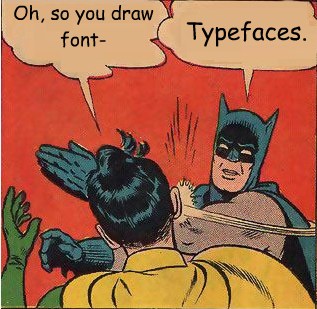

Font Variant Numeric
TL;DR: If you use the native font stack (the default in Bootstrap 4+), check the numbers displayed in tables, especially on Apple’s platforms.

Photo by Jen Theodore.
A new problem
Many of the content creation frameworks that support HTML output in the R world are getting upgraded to Bootstrap 4+:
- Shiny and R Markdown can use bslib to customize Bootstrap version;
- The three-column Bootstrap style for bookdown projects;
- The pkgdown 2.0.0 update introducing the Bootstrap 5 template;
- Quarto HTML output that is rendered with Bootstrap 5 by default.
After upgrading some of my applications and documents, the numbers in some tables look weird under macOS: they are not 100% vertically aligned.
This issue is caused by the combination of two facts:
- Bootstrap 4+ switched to the native font stack from the Helvetica/Arial font stack in Bootstrap 3.
- The macOS default typeface San Francisco renders proportional numbers by default, although most of the other system default sans serif fonts render tabular (fixed-width) numbers by default.
As you probably know, I like the native font stack. However, to present quantitative information effectively in tables, I would expect the numbers on different rows are aligned vertically without using monospaced typefaces.
The subtle solution
There are around 20 CSS font-* properties controlling the typography.
You probably have used the four most common ones:
font-family, font-weight, font-size, and font-style.
Fortunately, there is a dedicated property
font-variant-numeric
to specify the numeric glyphs if the corresponding
OpenType features
are available.
For my use case, the solution is simple:
table {
font-variant-numeric: tabular-nums;
}A typesetting experiment
I wrote some R code to create reproducible examples and demonstrate the fix. The code generates specimens with knitr, htmltools, and webshot2.
Here are the results for the default typefaces under the mainstream platforms. You can also observe their relative widths when rendered under the same size. All table columns are right-aligned.
San Francisco for macOS:

San Francisco (more accurately, SF Pro Text)
Apple’s previous defaults, Helvetica Neue and Lucida Grande:
Helvetica Neue

Lucida Grande
Segoe UI for Windows:

Segoe UI
Roboto for Android:
Roboto
Oh, last but not least:
